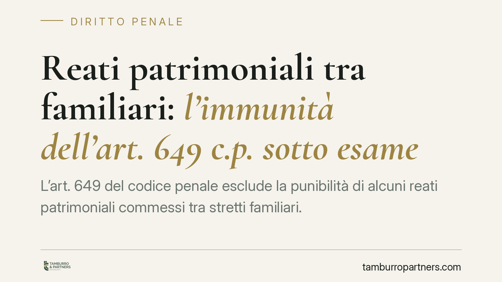

Reati patrimoniali tra familiari: l'immunità dell'art. 649 c.p. sotto esame
L'art. 649 del codice penale esclude la punibilità di alcuni reati patrimoniali commessi tra stretti familiari. Si discute se questa immunità sia ancora compatibile con la tutela dei soggetti fragili, come le persone con disabilità. Una questione delicata, che tocca il confine tra riservatezza dei rapporti familiari e protezione della vittima. Facciamo chiarezza sul perimetro della norma e sulle implicazioni pratiche.

Il contesto
Si torna a discutere di un istituto che, da sempre, divide: l'immunità penale per alcuni reati patrimoniali commessi all'interno della famiglia. Il tema è tornato d'attualità in relazione a vicende in cui la vittima è una persona in condizione di fragilità, e dove l'esclusione della punibilità per l'autore – legato a lei da vincolo familiare – appare in tensione con l'esigenza di tutela.
Una premessa di metodo. Al momento in cui scriviamo, non risulta a questo studio una pronuncia definitiva che abbia modificato o dichiarato illegittimo l'art. 649 c.p. Eventuali ordinanze di rimessione alla Corte Costituzionale vanno verificate nei loro estremi ufficiali prima di attribuire a esse effetti concreti. Trattiamo quindi la questione in termini di principio, senza dare per acquisito ciò che non lo è.
Inquadramento normativo
L'art. 649 c.p. va letto con precisione, perché distingue due piani ben diversi.
Il comma 1 prevede una vera e propria causa di non punibilità (cioè una situazione in cui il reato esiste ma la legge rinuncia a punirlo) per chi commette un delitto contro il patrimonio – previsto dal Titolo XIII del codice – in danno: del coniuge non legalmente separato; dell'ascendente o discendente; dell'affine in linea retta; dell'adottante o dell'adottato; del fratello o della sorella conviventi con l'autore. In questi casi non si procede affatto.
Il comma 2 opera invece su un altro livello: per gli stessi delitti commessi in danno di coniuge legalmente separato, fratello o sorella non conviventi, zio o nipote, affine in secondo grado convivente, il fatto è punibile ma solo a querela della persona offesa. Qui la vittima mantiene il potere di attivare il procedimento.
Un punto tecnico spesso trascurato: l'art. 649 c.p. si applica ai delitti contro il patrimonio del Titolo XIII. La circonvenzione di persone incapaci (art. 643 c.p.) è collocata proprio in quel Titolo, ma la sua natura è discussa, perché tutela anche – e secondo alcuni soprattutto – la libertà di autodeterminazione del soggetto debole, non solo il suo patrimonio. Che l'immunità dell'art. 649 c.p. si estenda a questa fattispecie non è quindi scontato: è una questione interpretativa aperta, da argomentare caso per caso.
Sul versante della tutela dei soggetti fragili, va richiamata la Convenzione ONU sui diritti delle persone con disabilità, ratificata in Italia con la legge 3 marzo 2009, n. 18, che impegna lo Stato a garantire protezione effettiva contro ogni forma di sfruttamento e abuso. È su questo terreno che si gioca il possibile contrasto con un'immunità automatica fondata sul solo vincolo familiare.
Implicazioni pratiche
È bene essere chiari: allo stato, nulla è cambiato. L'art. 649 c.p. è pienamente in vigore e continua a operare secondo la distinzione tra comma 1 e comma 2.
Chi subisce una condotta illecita di natura patrimoniale da parte di un familiare deve quindi ragionare su due piani distinti.
Sul piano penale, occorre verificare anzitutto quale sia esattamente il reato ipotizzabile e se ricada nell'ambito dell'art. 649 c.p. La circonvenzione di incapace, per le ragioni dette, merita una valutazione specifica e non va liquidata come automaticamente coperta dall'immunità.
Sul piano civile, la tutela resta in ogni caso disponibile. L'immunità penale non impedisce di agire per il risarcimento del danno né di attivare gli strumenti di protezione del soggetto fragile: l'amministrazione di sostegno (artt. 404 e ss. c.c.) o, nei casi più gravi, l'interdizione. Questi istituti consentono di mettere al riparo il patrimonio della persona vulnerabile indipendentemente dall'esito penale.
Cosa fare in concreto
- Qualificate la condotta prima di tutto. Verificate con un legale quale reato sia in concreto configurabile e se rientri davvero nel perimetro dell'art. 649 c.p.
- Distinguete comma 1 e comma 2. Accertate il grado di parentela e la condizione di convivenza: da questi dati dipende se il fatto è non punibile o procedibile a querela.
- Non trascurate i termini della querela. Dove la procedibilità è a querela, il termine decorre dalla conoscenza del fatto: agite tempestivamente.
- Attivate la tutela civile e protettiva. Valutate l'amministrazione di sostegno per salvaguardare il patrimonio della persona fragile, a prescindere dal procedimento penale.
- Documentate tutto. Conservate estratti conto, atti di disposizione e comunicazioni: sono decisivi sia in sede penale sia in sede civile.
Disclaimer
Contributo informativo a cura di Tamburro & Partners - Avv. Giuseppe Tamburro. Non costituisce parere legale.
Ogni condominio ha una storia a sé.
Se gestisci un'amministrazione e vuoi un confronto su una specifica questione condominiale, scrivi allo studio. Ti rispondiamo entro un giorno lavorativo.